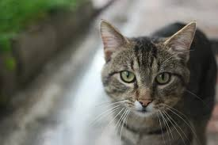

<!-- img : 그림출력, 빈요소 -->




<hr>
<hr>
<hr/>

<a href="https://www.daum.net">
    
</a>

<hr>

<!-- 고양이 그림 출력, 클릭하면 naver로 이동 -->
<a href="https://www.naver.com">
    
</a>

<hr>


<!-- 사자 그림 출력, 클릭하면 github로 이동 -->
<a href="https://github.com/hwarang9917">
    
</a>

<!-- webp 테스트 -->
